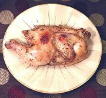

|
Cornish Game Hen, SouthwestUSA Southwest | ||||
| Serves: Effort: Sched: DoAhead: |
2 main ** 1 hr Part |
This Recipe, using a Southwest flavored baste, is easy to make up and takes little attention while it cooks. The amounts given here are for one large Game Hen (nearly 2 pounds) sufficient to serve two. For two hens, just double the amounts. | |||
|
1 1 2 2 1 1/2 1 1/4 1/3 |
cl T T t t t t t |
Game Hen (1) Garlic Olive Oil (2) Lemon Juice Coriander seed Cumin seed Marjoram, dry Chili powder (3) Salt |
Prep - (15 min plus thaw time)
|